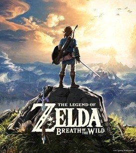

- Year: 2017
- Genre: Action-Adventure, Open World
- Developer: Nintendo EPD
- Platforms: Nintendo Switch, Wii U
- Awards: Game of the Year (GOTY) 2017
About the Game
The Legend of Zelda: Breath of the Wild is an open-world action-adventure game developed by Nintendo. Players take on the role of Link, who awakens in a ruined kingdom and must explore a vast world to regain his strength and defeat the evil Calamity Ganon.
Key Features
- Open World: Explore a massive, interactive world filled with secrets and challenges.
- Non-Linear Gameplay: Complete objectives in any order and approach challenges creatively.
- Physics-Based Puzzles: Solve puzzles using the game's physics engine and environmental interactions.
- Weapon Durability: Weapons and tools degrade over time, encouraging strategic use.
- Expansive Story: Uncover the history of Hyrule through memories and exploration.
Why It Won GOTY 2017
- Revolutionary Open World: Breath of the Wild redefined open-world design with its freedom and interactivity.
- Innovative Gameplay: The game's physics-based mechanics and non-linear structure were groundbreaking.
- Visual and Audio Design: The game's art style and soundtrack were widely praised.
- Cultural Impact: Breath of the Wild became a defining title for the Nintendo Switch.
- Critical Acclaim: The game received universal acclaim from critics and players alike.